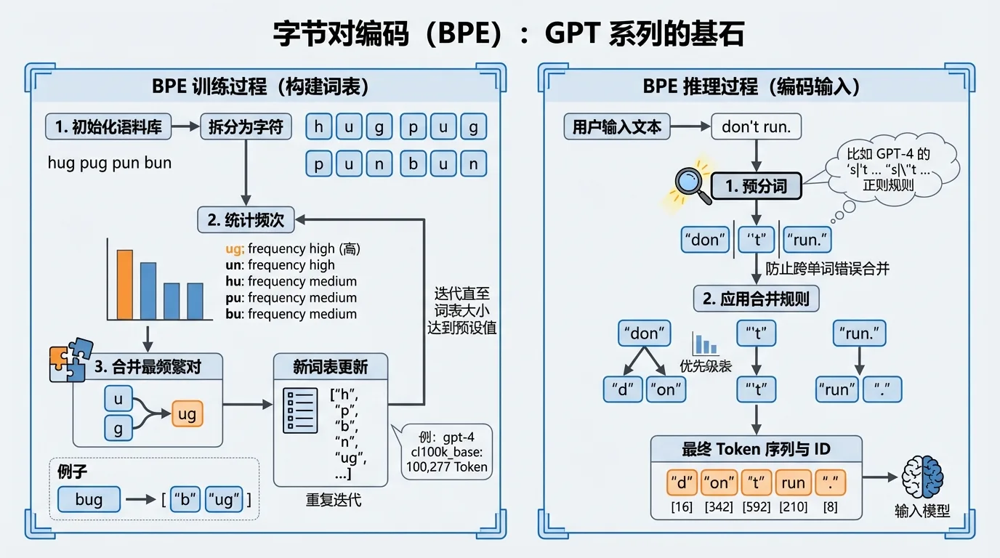
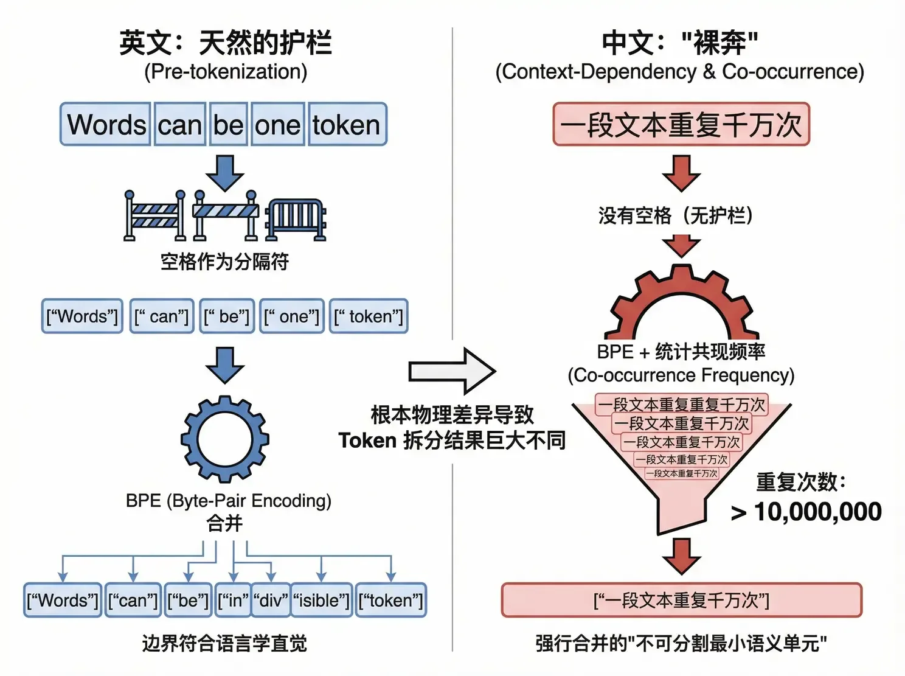

Token 怎麼數：BPE 與隱形的「Token 税」
帳單按 Token 結算，但 Token 到底是怎麼數出來的？它既不是字符，也不是單詞，而是基於統計規律生成的「子詞」。理解這套規則，你才會明白：同樣一句話，中文為什麼天生比英文貴 2 倍。
早期 NLP 走過兩個極端。詞級別分詞語義明確，但英語幾十萬個單詞加上詞形變化（look / looks / looking / looked），詞表直接爆炸，還處理不了沒見過的新詞（OOV 問題）。字符級別分詞什麼詞都拆得開，但序列太長、單個字符資訊量太低，推理效率極差。
現代大模型選擇了中間路綫——子詞分詞（Subword Tokenization）：常見的詞保留為完整 Token，不常見的詞拆成有意義的片段。詞表控制在 32k 到 200k 之間，既不爆炸，又什麼都能表示。

GPT 系列、Llama 3 都用 BPE（Byte-Pair Encoding，字節對編碼）。它的詞表不是人工編的，而是從語料裏「合併」出來的：
初始化：把語料庫全部拆成最小單位（對 Unicode 文本先做 UTF-8 編碼，以字節為單位）。
統計頻次：數一數所有相鄰字節對在語料庫裏出現的頻率。
合併最頻繁的一對：比如 "u" 和 "g" 經常相鄰，就合併成新符號 "ug" 加入詞表。
迭代：重複第 2、3 步，直到詞表達到預設大小——Llama 2 是 32,000，GPT-4 的 cl100k_base 是 100,277。
推理時反過來查：常見詞 "hug" 直接是一個 Token；生僻詞 "bug" 拆成 ["b", "ug"] 兩個。詞表越大、你的文本越「常見」，Token 就越少，帳單就越薄。這就是為什麼 GPT-4 換用 10 萬詞表後，還專門把多層縮進的空格序列併成單一 Token——程式碼生成的效率直接翻了幾倍。

主流模型的 Tokenizer 訓練語料以英文為主，BPE 學到的合併規則高度偏向英語詞彙。結果是：非拉丁語系（中文、日文、韓文）在 Token 化時面臨嚴重的效率劣勢，業界稱之為「Token 税」。
| 語言 | 示例 | Token 數 | 比率 | 現象解釋 |
|---|---|---|---|---|
| 英語 | Donald John Trump | 3 | ~0.75 Token/詞 | 常見單詞直接映射為 1 個 Token |
| 中文 | 唐納德·約翰·特朗普 | 6 | ~1.5 – 2.5 Token/字 | 常見字是 1 個 Token，生僻字被拆成 2–3 個字節 Token |
| 韓語 | 도널드 존 트럼프 | 7 | ~1.5 – 3.0 Token/字 | 編碼空間覆蓋不足，經常回退到字節編碼 |
表達同樣的語義，中文用戶要消耗比英文用戶多 2 倍以上的 Token：既多付了 API 的錢，又變相縮短了上下文窗口。

點選一句話，對比它的中英文版本各要消耗多少 Token（按典型比率估算）。想看精確切分，去 OpenAI Tokenizer 親手試。
英文有天然的護欄：BPE 合併前先按空格預分詞，合併只發生在單詞內部，Token 邊界基本符合語言學直覺。中文沒有空格，BPE 只能完全依賴統計共現頻率來決定邊界——一段文本（哪怕是一句毫無邏輯的廣告語）在語料裏重複出現千萬次，BPE 就會把它整個合併成一個「不可分割的最小語義單元」。
最有名的例子是「給主人留下些什麼吧」：這句網絡網誌時代的高頻留言，在 GPT 的詞表裏被強行合併成了獨立 Token，成了著名的「故障 Token」。這不是段子，是 BPE 統計邏輯的必然產物。

Token 是統計出來的子詞，不是字符也不是單詞。BPE 按語料頻率迭代合併，詞表大小是超參數。
中文天生要交 Token 税：同樣語義比英文多花 2 倍以上，還變相縮短上下文窗口。估算預算時別按英文經驗拍腦袋。
詞表決定壓縮率。cl100k_base 十萬詞表 + 空格合併優化，是 GPT-4 程式碼效率高的直接原因。選模型時 Tokenizer 效率也是成本參數。
內容來源：整理自作者團隊內部分享《AI Token 降本增效策略分享》第一部分「Token 的構成」。BPE 細節可參考 OpenAI Tokenizer 與 tiktoken 開源庫。想複習分詞和詞表的底層原理，回看大模型原理 · 詞表與訓練。